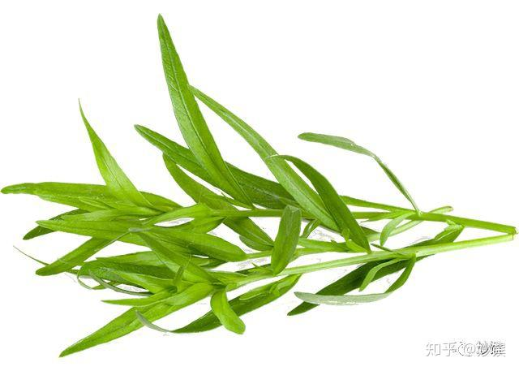
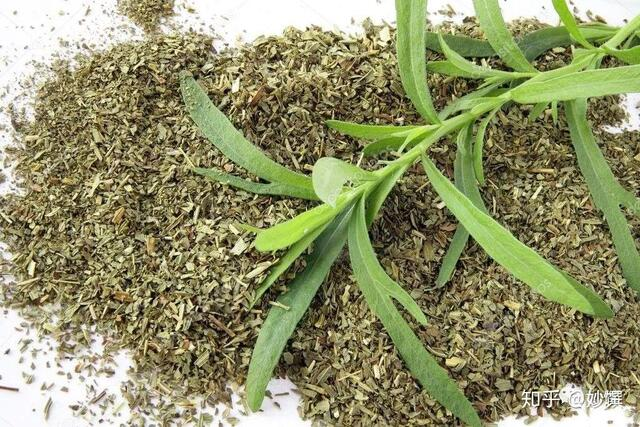
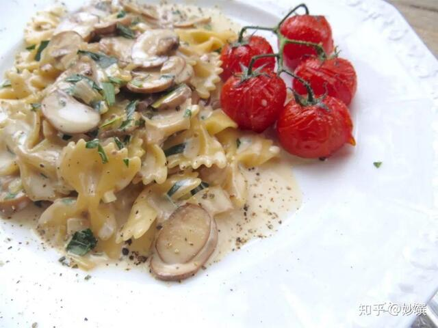

龙蒿原产自亚洲，后来才传入欧洲。闻起来有一股浓郁的蒿草味，但并不冲，味道接近中餐用的八角。
我和这个香草的情份既浅又深。说浅，因为在德国龙蒿不太常见，我在厨房里也很少用它；说深，因为某天按照英国厨神狗蛋叔的方子，买了盆龙蒿做意面，配菜是蘑菇和韭葱，一举拿下家里不爱吃鸡的那位之芳心，从不跟我点菜的人竟然后来提过几次这个意面。真要感谢狗蛋叔没有乱推。

▲ 新鲜龙蒿，图源自网络。

▲ 干龙蒿，图源自网络。
气味：浓郁但不冲，比较温和，略带甘甜。
回顾：
家里不爱吃鸡的那位心心念念的意面，狗蛋叔的方子。想叙旧的戳上方蓝色链接。

▲ 龙蒿最后的加入，提升了整盘的味道。
应用：烹调海鲜；炖猪牛羊红肉；拌沙拉。